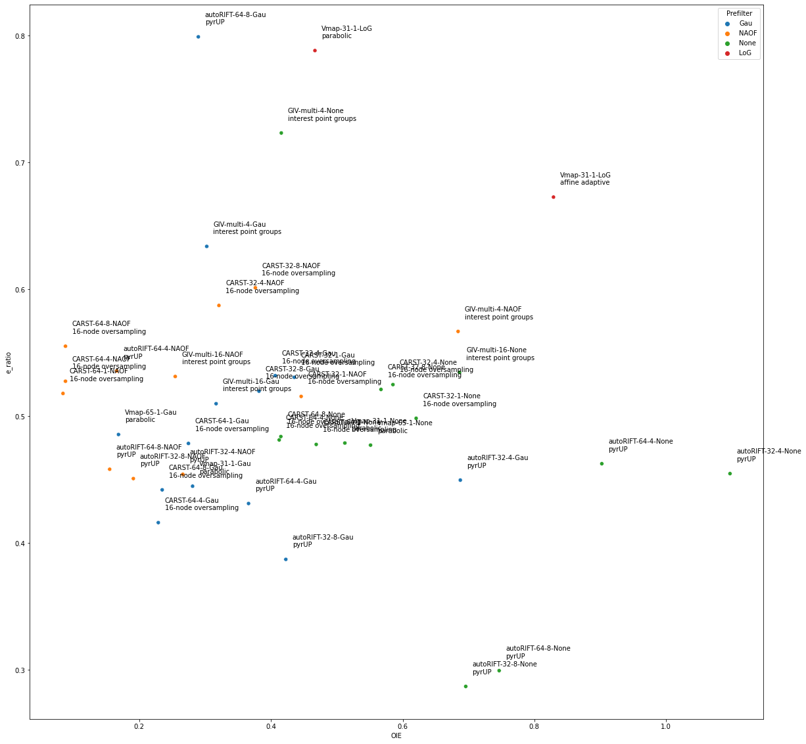
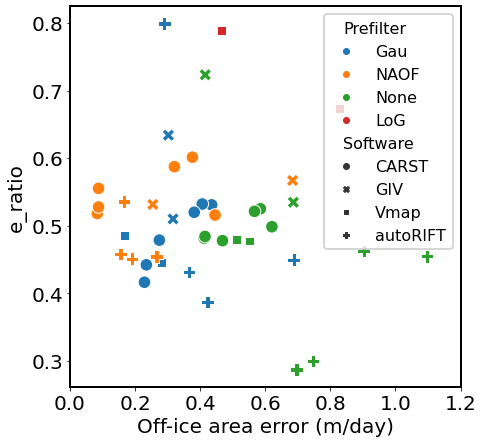

Comparing Metric #1 (off-ice error) and #2 (Sobel flow statistics)
Contents
Comparing Metric #1 (off-ice error) and #2 (Sobel flow statistics)¶
Analysis¶
1. Basic information, importing modules¶
Test area: Kaskawulsh Glacier
Test packages: CARST, Vmap, GIV, autoRIFT
Test pair: Landsat 8 20180304-20180405
# Developer's setting
%load_ext autoreload
%autoreload 2
# import gftt
import matplotlib.pyplot as plt
# import numpy as np
import pandas as pd
import seaborn as sns
import matplotlib
2. Load the feature tracking data list and the metrics for each test¶
Each row is a feature tracking test using a specific parameter combination described in each field.
df = pd.read_csv('../results_2022.csv', dtype=str)
df['OIE-x'] = df['OIE-x'].astype(float)
df['OIE-y'] = df['OIE-y'].astype(float)
df['e_ratio'] = df['e_ratio'].astype(float)
df['OIE'] = (df['OIE-x'] * df['OIE-y']) ** 0.5
demo = df
demo
| Date | Chip (px) | Resolution (px) | Prefilter | Subpixel | Software | Vx | Vy | OIE-x | OIE-y | SS-x | SS-y | e_ratio | OIE | |
|---|---|---|---|---|---|---|---|---|---|---|---|---|---|---|
| 0 | LS8-20180304-20180405 | 32 | 1 | Gau | 16-node oversampling | CARST | /home/jovyan/Projects/PX_comparison/PX/CARST/2... | /home/jovyan/Projects/PX_comparison/PX/CARST/2... | 0.417480 | 0.454102 | 1.1663688 | 1.1270733 | 0.530711 | 0.435406 |
| 1 | LS8-20180304-20180405 | 32 | 1 | NAOF | 16-node oversampling | CARST | /home/jovyan/Projects/PX_comparison/PX/CARST/2... | /home/jovyan/Projects/PX_comparison/PX/CARST/2... | 0.417480 | 0.476074 | 2.158645 | 2.0701513 | 0.515636 | 0.445816 |
| 2 | LS8-20180304-20180405 | 32 | 1 | None | 16-node oversampling | CARST | /home/jovyan/Projects/PX_comparison/PX/CARST/2... | /home/jovyan/Projects/PX_comparison/PX/CARST/2... | 0.673828 | 0.571289 | 1.7145556 | 1.4171938 | 0.498380 | 0.620444 |
| 3 | LS8-20180304-20180405 | 32 | 4 | Gau | 16-node oversampling | CARST | /home/jovyan/Projects/PX_comparison/PX/CARST/2... | /home/jovyan/Projects/PX_comparison/PX/CARST/2... | 0.402832 | 0.410156 | 1.4108583 | 1.3728955 | 0.531994 | 0.406478 |
| 4 | LS8-20180304-20180405 | 32 | 4 | NAOF | 16-node oversampling | CARST | /home/jovyan/Projects/PX_comparison/PX/CARST/2... | /home/jovyan/Projects/PX_comparison/PX/CARST/2... | 0.351562 | 0.292969 | 2.057519 | 2.4501016 | 0.587326 | 0.320931 |
| 5 | LS8-20180304-20180405 | 32 | 4 | None | 16-node oversampling | CARST | /home/jovyan/Projects/PX_comparison/PX/CARST/2... | /home/jovyan/Projects/PX_comparison/PX/CARST/2... | 0.615234 | 0.556641 | 2.4466836 | 2.0846379 | 0.524962 | 0.585205 |
| 6 | LS8-20180304-20180405 | 32 | 8 | Gau | 16-node oversampling | CARST | /home/jovyan/Projects/PX_comparison/PX/CARST/2... | /home/jovyan/Projects/PX_comparison/PX/CARST/2... | 0.382690 | 0.380859 | 1.6346304 | 1.5294207 | 0.519771 | 0.381774 |
| 7 | LS8-20180304-20180405 | 32 | 8 | NAOF | 16-node oversampling | CARST | /home/jovyan/Projects/PX_comparison/PX/CARST/2... | /home/jovyan/Projects/PX_comparison/PX/CARST/2... | 0.382690 | 0.369873 | 2.2543666 | 2.5271208 | 0.601282 | 0.376227 |
| 8 | LS8-20180304-20180405 | 32 | 8 | None | 16-node oversampling | CARST | /home/jovyan/Projects/PX_comparison/PX/CARST/2... | /home/jovyan/Projects/PX_comparison/PX/CARST/2... | 0.593262 | 0.541992 | 2.994531 | 2.8038511 | 0.521151 | 0.567048 |
| 9 | LS8-20180304-20180405 | 64 | 1 | Gau | 16-node oversampling | CARST | /home/jovyan/Projects/PX_comparison/PX/CARST/2... | /home/jovyan/Projects/PX_comparison/PX/CARST/2... | 0.278320 | 0.270996 | 0.62458026 | 0.5566406 | 0.478549 | 0.274634 |
| 10 | LS8-20180304-20180405 | 64 | 1 | NAOF | 16-node oversampling | CARST | /home/jovyan/Projects/PX_comparison/PX/CARST/2... | /home/jovyan/Projects/PX_comparison/PX/CARST/2... | 0.080566 | 0.087891 | 0.9375 | 0.8676031 | 0.517966 | 0.084149 |
| 11 | LS8-20180304-20180405 | 64 | 1 | None | 16-node oversampling | CARST | /home/jovyan/Projects/PX_comparison/PX/CARST/2... | /home/jovyan/Projects/PX_comparison/PX/CARST/2... | 0.476074 | 0.461426 | 0.85011435 | 0.71911746 | 0.477798 | 0.468693 |
| 12 | LS8-20180304-20180405 | 64 | 4 | Gau | 16-node oversampling | CARST | /home/jovyan/Projects/PX_comparison/PX/CARST/2... | /home/jovyan/Projects/PX_comparison/PX/CARST/2... | 0.227051 | 0.230713 | 0.72690797 | 0.66096765 | 0.416168 | 0.228875 |
| 13 | LS8-20180304-20180405 | 64 | 4 | NAOF | 16-node oversampling | CARST | /home/jovyan/Projects/PX_comparison/PX/CARST/2... | /home/jovyan/Projects/PX_comparison/PX/CARST/2... | 0.087891 | 0.087891 | 1.0563139 | 1.056517 | 0.527601 | 0.087891 |
| 14 | LS8-20180304-20180405 | 64 | 4 | None | 16-node oversampling | CARST | /home/jovyan/Projects/PX_comparison/PX/CARST/2... | /home/jovyan/Projects/PX_comparison/PX/CARST/2... | 0.446777 | 0.380859 | 1.3136308 | 1.1410748 | 0.481342 | 0.412504 |
| 15 | LS8-20180304-20180405 | 64 | 8 | Gau | 16-node oversampling | CARST | /home/jovyan/Projects/PX_comparison/PX/CARST/2... | /home/jovyan/Projects/PX_comparison/PX/CARST/2... | 0.219727 | 0.250854 | 0.8555553 | 0.8978668 | 0.442005 | 0.234775 |
| 16 | LS8-20180304-20180405 | 64 | 8 | NAOF | 16-node oversampling | CARST | /home/jovyan/Projects/PX_comparison/PX/CARST/2... | /home/jovyan/Projects/PX_comparison/PX/CARST/2... | 0.087891 | 0.087891 | 1.0285248 | 1.5333527 | 0.555192 | 0.087891 |
| 17 | LS8-20180304-20180405 | 64 | 8 | None | 16-node oversampling | CARST | /home/jovyan/Projects/PX_comparison/PX/CARST/2... | /home/jovyan/Projects/PX_comparison/PX/CARST/2... | 0.439453 | 0.391846 | 1.6876811 | 1.5832853 | 0.484009 | 0.414967 |
| 18 | LS8-20180304-20180405 | multi | 16 | NAOF | interest point groups | GIV | /home/jovyan/Projects/PX_comparison/PX/GIV/u_l... | /home/jovyan/Projects/PX_comparison/PX/GIV/v_l... | 0.233542 | 0.277519 | 2.30953814171093 | 2.666533414036157 | 0.531331 | 0.254583 |
| 19 | LS8-20180304-20180405 | multi | 4 | NAOF | interest point groups | GIV | /home/jovyan/Projects/PX_comparison/PX/GIV/u_l... | /home/jovyan/Projects/PX_comparison/PX/GIV/v_l... | 0.813247 | 0.575565 | 3.8320897472339714 | 3.621215692378167 | 0.566861 | 0.684161 |
| 20 | LS8-20180304-20180405 | multi | 16 | Gau | interest point groups | GIV | /home/jovyan/Projects/PX_comparison/PX/GIV/u_l... | /home/jovyan/Projects/PX_comparison/PX/GIV/v_l... | 0.251201 | 0.399150 | 2.7919786561561706 | 3.6164688755112606 | 0.509911 | 0.316649 |
| 21 | LS8-20180304-20180405 | multi | 4 | Gau | interest point groups | GIV | /home/jovyan/Projects/PX_comparison/PX/GIV/u_l... | /home/jovyan/Projects/PX_comparison/PX/GIV/v_l... | 0.235697 | 0.388085 | 3.8291508956475058 | 4.109152174462436 | 0.633869 | 0.302441 |
| 22 | LS8-20180304-20180405 | multi | 16 | None | interest point groups | GIV | /home/jovyan/Projects/PX_comparison/PX/GIV/u_l... | /home/jovyan/Projects/PX_comparison/PX/GIV/v_l... | 0.614010 | 0.767214 | 4.8425141531327425 | 6.934244151078591 | 0.534581 | 0.686351 |
| 23 | LS8-20180304-20180405 | multi | 4 | None | interest point groups | GIV | /home/jovyan/Projects/PX_comparison/PX/GIV/u_l... | /home/jovyan/Projects/PX_comparison/PX/GIV/v_l... | 0.367257 | 0.470482 | 3.57385820317995 | 4.022871859404343 | 0.723281 | 0.415678 |
| 24 | LS8-20180304-20180405 | 31 | 1 | Gau | parabolic | Vmap | /home/jovyan/Projects/PX_comparison/PX/Vmap/pa... | /home/jovyan/Projects/PX_comparison/PX/Vmap/pa... | 0.280396 | 0.281501 | 0.90366274 | 0.7340296 | 0.444871 | 0.280948 |
| 25 | LS8-20180304-20180405 | 65 | 1 | Gau | parabolic | Vmap | /home/jovyan/Projects/PX_comparison/PX/Vmap/pa... | /home/jovyan/Projects/PX_comparison/PX/Vmap/pa... | 0.157598 | 0.179982 | 0.3948701 | 0.33154497 | 0.485619 | 0.168418 |
| 26 | LS8-20180304-20180405 | 31 | 1 | None | parabolic | Vmap | /home/jovyan/Projects/PX_comparison/PX/Vmap/pa... | /home/jovyan/Projects/PX_comparison/PX/Vmap/pa... | 0.547266 | 0.479374 | 1.2786075 | 1.0036786 | 0.478898 | 0.512197 |
| 27 | LS8-20180304-20180405 | 65 | 1 | None | parabolic | Vmap | /home/jovyan/Projects/PX_comparison/PX/Vmap/pa... | /home/jovyan/Projects/PX_comparison/PX/Vmap/pa... | 0.579469 | 0.524274 | 1.0558692 | 0.93909174 | 0.477247 | 0.551181 |
| 28 | LS8-20180304-20180405 | 31 | 1 | LoG | parabolic | Vmap | /home/jovyan/Projects/PX_comparison/PX/Vmap/su... | /home/jovyan/Projects/PX_comparison/PX/Vmap/su... | 0.464195 | 0.469295 | 1.0205486 | 0.8850996 | 0.788237 | 0.466738 |
| 29 | LS8-20180304-20180405 | 31 | 1 | LoG | affine adaptive | Vmap | /home/jovyan/Projects/PX_comparison/PX/Vmap/su... | /home/jovyan/Projects/PX_comparison/PX/Vmap/su... | 0.748049 | 0.918787 | 2.3552241 | 2.4794679 | 0.672740 | 0.829034 |
| 30 | LS8-20180304-20180405 | 32 | 4 | None | pyrUP | autoRIFT | /home/jovyan/Projects/PX_comparison/PX/autoRIF... | /home/jovyan/Projects/PX_comparison/PX/autoRIF... | 1.040039 | 1.157227 | 4.14838 | 3.8029556 | 0.454784 | 1.097069 |
| 31 | LS8-20180304-20180405 | 32 | 8 | None | pyrUP | autoRIFT | /home/jovyan/Projects/PX_comparison/PX/autoRIF... | /home/jovyan/Projects/PX_comparison/PX/autoRIF... | 0.703125 | 0.688477 | 2.202143 | 2.200681 | 0.287052 | 0.695762 |
| 32 | LS8-20180304-20180405 | 64 | 4 | None | pyrUP | autoRIFT | /home/jovyan/Projects/PX_comparison/PX/autoRIF... | /home/jovyan/Projects/PX_comparison/PX/autoRIF... | 1.010742 | 0.805664 | 3.5624325 | 3.283342 | 0.462598 | 0.902396 |
| 33 | LS8-20180304-20180405 | 64 | 8 | None | pyrUP | autoRIFT | /home/jovyan/Projects/PX_comparison/PX/autoRIF... | /home/jovyan/Projects/PX_comparison/PX/autoRIF... | 0.776367 | 0.717773 | 2.7598217 | 2.8949108 | 0.299500 | 0.746496 |
| 34 | LS8-20180304-20180405 | 32 | 4 | Gau | pyrUP | autoRIFT | /home/jovyan/Projects/PX_comparison/PX/autoRIF... | /home/jovyan/Projects/PX_comparison/PX/autoRIF... | 0.651855 | 0.725098 | 2.4052002 | 2.3179734 | 0.449671 | 0.687502 |
| 35 | LS8-20180304-20180405 | 32 | 8 | Gau | pyrUP | autoRIFT | /home/jovyan/Projects/PX_comparison/PX/autoRIF... | /home/jovyan/Projects/PX_comparison/PX/autoRIF... | 0.380859 | 0.468750 | 1.5284997 | 1.5939224 | 0.387193 | 0.422526 |
| 36 | LS8-20180304-20180405 | 64 | 4 | Gau | pyrUP | autoRIFT | /home/jovyan/Projects/PX_comparison/PX/autoRIF... | /home/jovyan/Projects/PX_comparison/PX/autoRIF... | 0.351562 | 0.380859 | 1.5844707 | 1.5081489 | 0.431223 | 0.365918 |
| 37 | LS8-20180304-20180405 | 64 | 8 | Gau | pyrUP | autoRIFT | /home/jovyan/Projects/PX_comparison/PX/autoRIF... | /home/jovyan/Projects/PX_comparison/PX/autoRIF... | 0.249023 | 0.336914 | 1.2863964 | 1.426851 | 0.799069 | 0.289654 |
| 38 | LS8-20180304-20180405 | 32 | 4 | NAOF | pyrUP | autoRIFT | /home/jovyan/Projects/PX_comparison/PX/autoRIF... | /home/jovyan/Projects/PX_comparison/PX/autoRIF... | 0.219727 | 0.322266 | 0.98264706 | 1.0748401 | 0.454247 | 0.266102 |
| 39 | LS8-20180304-20180405 | 32 | 8 | NAOF | pyrUP | autoRIFT | /home/jovyan/Projects/PX_comparison/PX/autoRIF... | /home/jovyan/Projects/PX_comparison/PX/autoRIF... | 0.146484 | 0.249023 | 0.87890625 | 1.0583433 | 0.450880 | 0.190992 |
| 40 | LS8-20180304-20180405 | 64 | 4 | NAOF | pyrUP | autoRIFT | /home/jovyan/Projects/PX_comparison/PX/autoRIF... | /home/jovyan/Projects/PX_comparison/PX/autoRIF... | 0.117188 | 0.234375 | 0.70920223 | 0.7969612 | 0.535768 | 0.165728 |
| 41 | LS8-20180304-20180405 | 64 | 8 | NAOF | pyrUP | autoRIFT | /home/jovyan/Projects/PX_comparison/PX/autoRIF... | /home/jovyan/Projects/PX_comparison/PX/autoRIF... | 0.117188 | 0.205078 | 0.6159315 | 0.77401435 | 0.458230 | 0.155024 |
3. Sobel flow statistics VS Off-ice error¶
sns.scatterplot(data=demo, x='OIE', y='e_ratio', hue='Software')
<AxesSubplot:xlabel='OIE', ylabel='e_ratio'>
sns.scatterplot(data=demo, x='OIE', y='e_ratio', hue='Resolution (px)')
<AxesSubplot:xlabel='OIE', ylabel='e_ratio'>
sns.scatterplot(data=demo, x='OIE', y='e_ratio', hue='Chip (px)')
<AxesSubplot:xlabel='OIE', ylabel='e_ratio'>
fig, ax5 = plt.subplots(1, 1, figsize=(20, 20))
sns.scatterplot(data=demo, x='OIE', y='e_ratio', hue='Prefilter', ax=ax5)
for idx, row in demo.iterrows():
label = '-'.join((row.Software, row['Chip (px)'], row['Resolution (px)'], row.Prefilter)) + '\n' + row.Subpixel
ax5.text(row['OIE'] + 0.01, row['e_ratio'] + 0.01, label)

4. AGU 2021 poster, Figure 3¶
# font = {'family' : 'normal',
# 'weight' : 'bold',
# 'size' : 22}
font = {'size' : 20}
matplotlib.rc('font', **font)
matplotlib.rc('legend', fontsize=16)
axes_settings = {'linewidth' : 2}
matplotlib.rc('axes', **axes_settings)
fig, ax6 = plt.subplots(1, 1, figsize=(7, 7))
sns.scatterplot(data=demo, x='OIE', y='e_ratio', hue='Prefilter', style='Software', s=160, ax=ax6, legend='full')
ax6.set_xlabel('Off-ice area error (m/day)')
ax6.set_ylabel('e_ratio')
ax6.set_xlim(0, 1.2)
legend = ax6.get_legend()
# legend.set_size(10)
legend.get_frame().set_linewidth(2)
fig.patch.set_facecolor('xkcd:white')
# fig.savefig('OIE-vs-SS_updated.svg')
